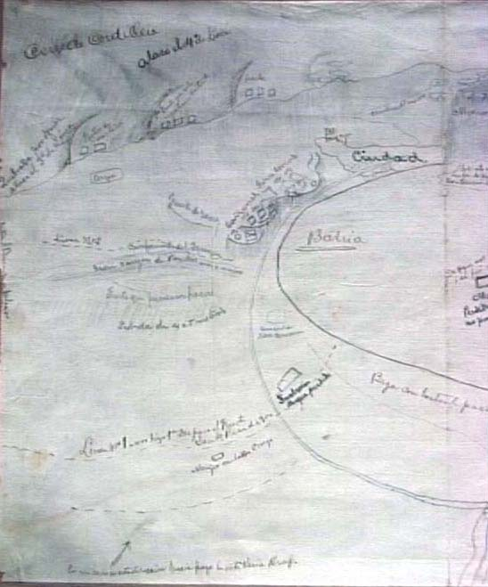

|
|  |
|
Benjamín Vicuña Mackenna, Croquis del puerto de Arica
|
One of the men busy with construcing the archive of the nation was Santiago´s mayor Benjamín Vicuña Mackenna. A respected historian and graduate from the Universidad de Chile, Vicuña, in 1873 –the final year of his term–, organised the first public exhibition in South America entirely dedicated to the veneration of relics from the colonial past, convinced that Chileans needed to become aware, and respectful, of their Hispanic ancestry. Many of the objects on display were donations from the family homes and archives of their wealthy organisers, among whom the historians and novelists Alberto Blest Gana and Ramón Subercaseaux. In Brazil, Benjamin Franklin Ramiz Galvão, the head of the National Library at Rio de Janeiro, organised a similar event, the 'Exhibition of Brazilian History', in 1881, featuring a huge amount of paintings, manuscripts, books and official documents spanning colonial, ecclesiatic and imperial history, all listed in a Catalogue of three large volumes. Visitors' numbers were rather sparse, though, and in the press the event was unfavourably compared to the far more popular exhibition of national industries going on at the same time – ironically enough, in preparation for the Continental Exhibition at Buenos Aires the following year, which also included the first Argentine exhibition of national history.
|